Costa Cálida · Mar Menor
Property for sale in San Pedro del Pinatar
New apartments and bungalows a short walk from the beach in Lo Pagán, and villas with a private pool, between the Mar Menor and the open sea. Here are the properties we sell in San Pedro del Pinatar today, with a short guide to the areas and what buying really costs.
- 19properties for sale in San Pedro del Pinatar
- from €151,900for a new apartment
- about 35 minto Región de Murcia airport
- 2 seasthe Mar Menor and the Mediterranean
For sale now
Properties for sale in San Pedro del Pinatar
New apartments with 1 to 3 bedrooms, bungalows with terraces and villas with a private pool, many within a kilometre of the beach. Prices are as listed today; ask us for the current availability.
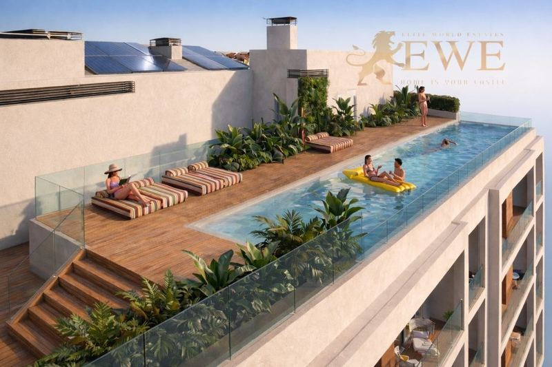
EWE3831San Pedro del Pinatar
New Apartments 600 m from the Beach in Lo Pagán
€151,900
1 bedroom · 1 bathroom · 37 m²Ref. EWE3831
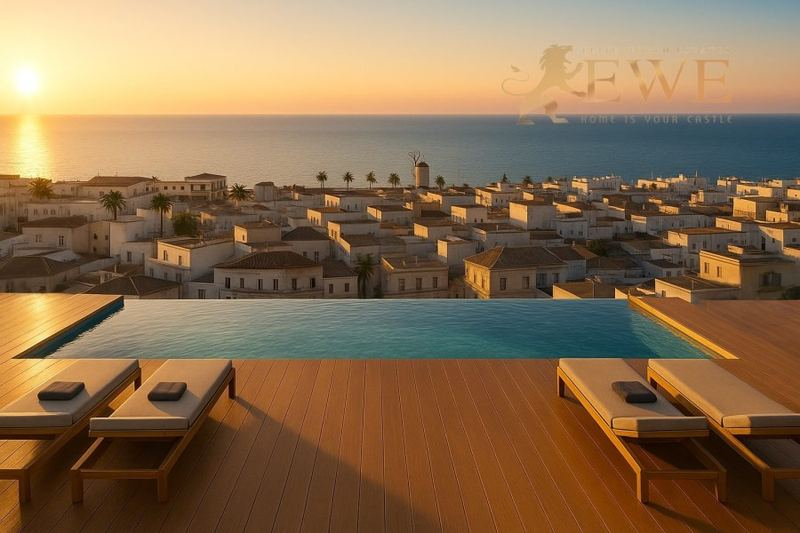
EWE3724San Pedro del Pinatar
Fully equipped apartments 700 m from the beach in Lo Pagán, San Pedro del Pinatar.
€168,900
1 bedroom · 1 bathroom · 45 m²Ref. EWE3724
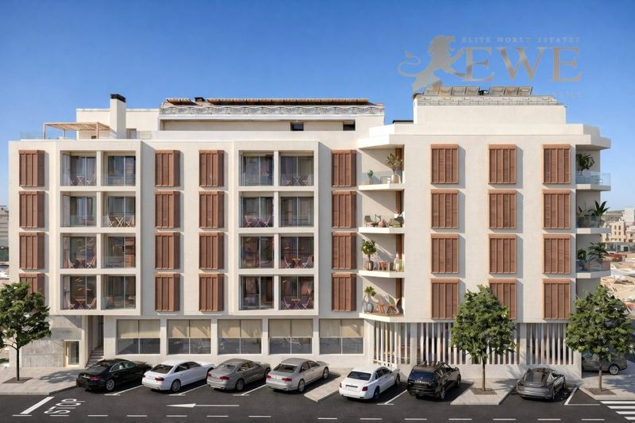
EWE3832San Pedro del Pinatar
Modern Apartment 600 m from the Beach in San Pedro del Pinatar
€231,900
2 bedrooms · 2 bathrooms · 73 m²Ref. EWE3832
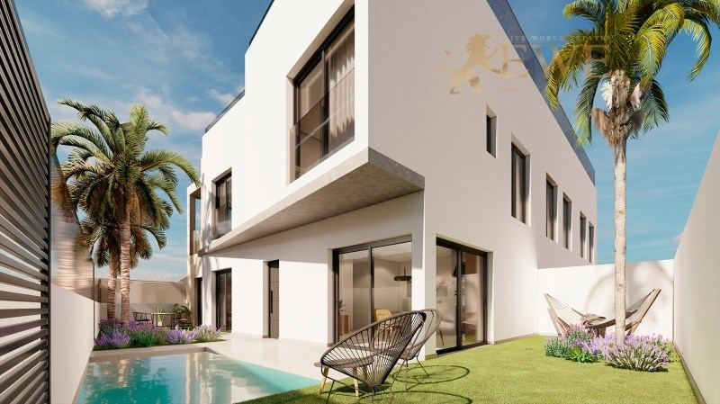
EWE3468San Pedro del Pinatar
Cosy apartment close to the beach in San Pedro del Pinatar
€258,900
2 bedrooms · 2 bathrooms · 73 m²Ref. EWE3468
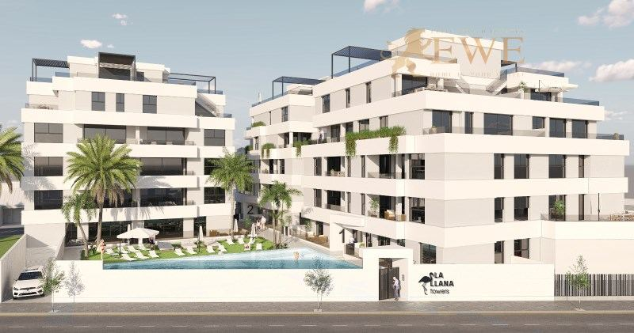
EWE3369San Pedro del Pinatar
New flat in San Pedro del Pinatar
€259,000
3 bedrooms · 2 bathrooms · 89.13 m²Ref. EWE3369
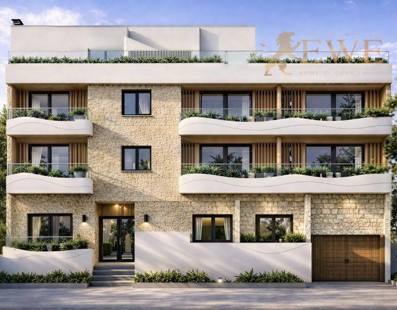
EWE3719San Pedro del Pinatar
Elegant apartment 200 m from the beach in San Pedro del Pinatar
€267,400
2 bedrooms · 2 bathroomsRef. EWE3719
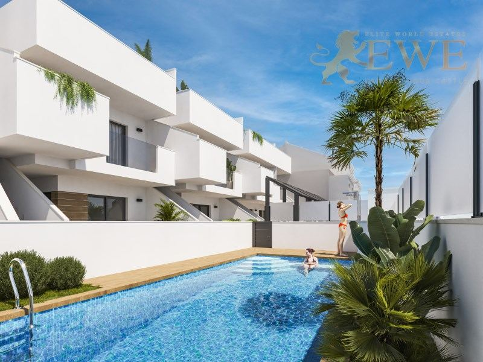
EWE3589San Pedro del Pinatar
New bungalow 2 km from the sea in San Pedro del Pinatar
€269,000
3 bedrooms · 2 bathrooms · 72 m²Ref. EWE3589
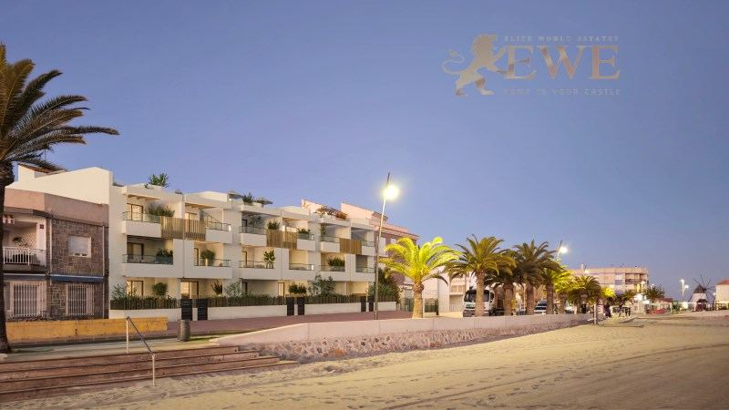
EWE3341San Pedro del Pinatar
Modern first line flat in Lo Pagan
€270,000
1 bedroom · 1 bathroom · 43 m²Ref. EWE3341
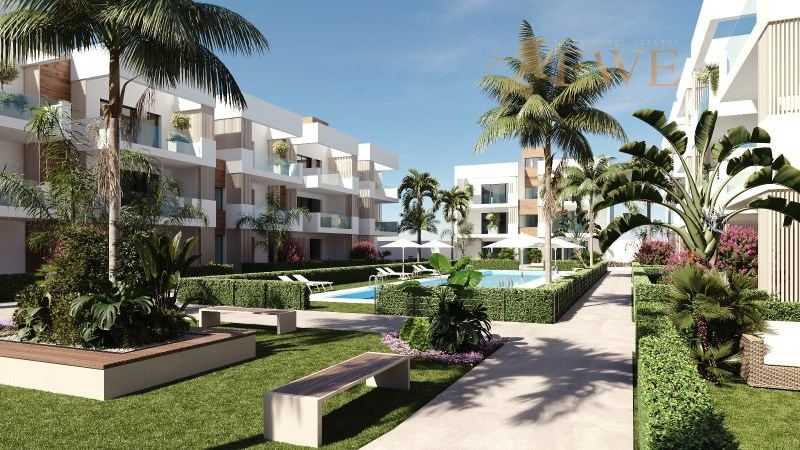
EWE3759San Pedro del Pinatar
Modern Apartment 2 km from the Beach in San Pedro del Pinatar
€277,900
2 bedrooms · 2 bathrooms · 80 m²Ref. EWE3759
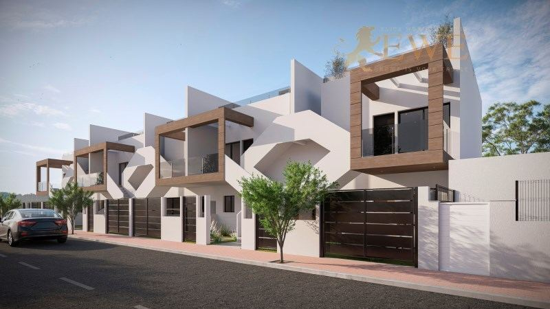
EWE3909San Pedro del Pinatar
New bungalow less than 2 km from the sea in San Pedro
€279,000
2 bathrooms · 70 m²Ref. EWE3909
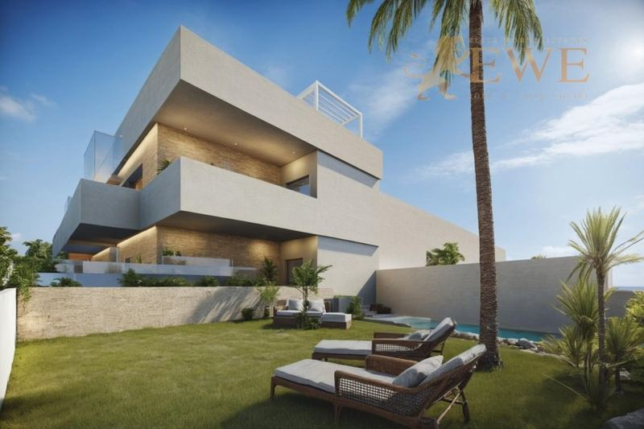
EWE3413San Pedro del Pinatar
Bungalow just 500 m from the beach in San Pedro del Pinatar
€299,950
2 bedrooms · 2 bathroomsRef. EWE3413
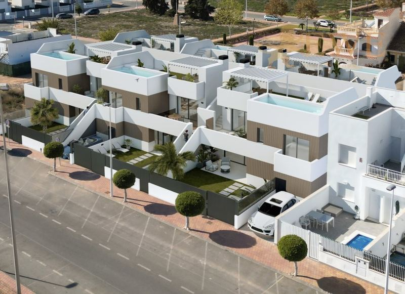
EWE3575San Pedro del Pinatar
Intimate bungalow 800 metres from the beach in Lo Pagan
€324,900
2 bedrooms · 2 bathrooms · 67 m²Ref. EWE3575
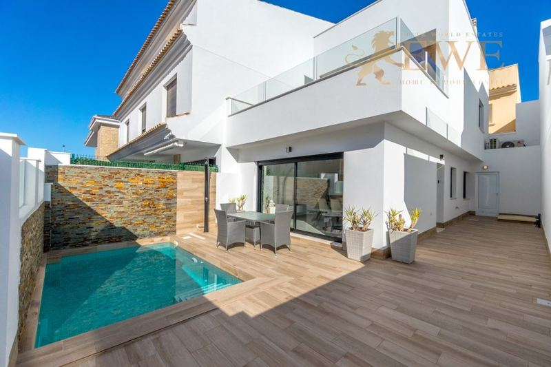
EWE3462San Pedro del Pinatar
Excellent terraced house 5 km from the beach in San Pedro del Pinatar
€380,000
3 bedrooms · 2 bathrooms · 104 m²Ref. EWE3462
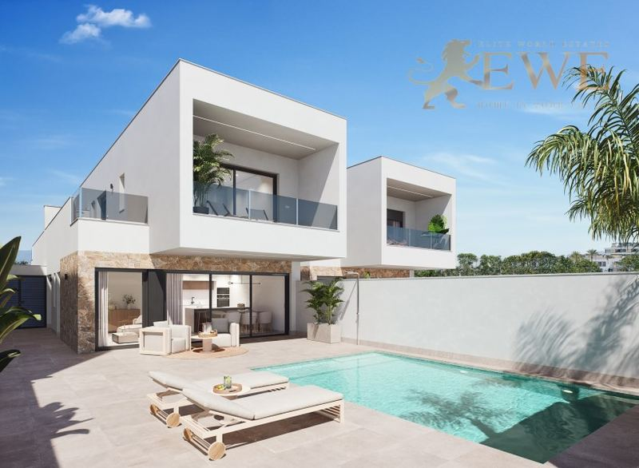
EWE3437San Pedro del Pinatar
Excellent villa with pool in San Pedro del Pinatar
€397,000
3 bedrooms · 3 bathrooms · 100 m²Ref. EWE3437
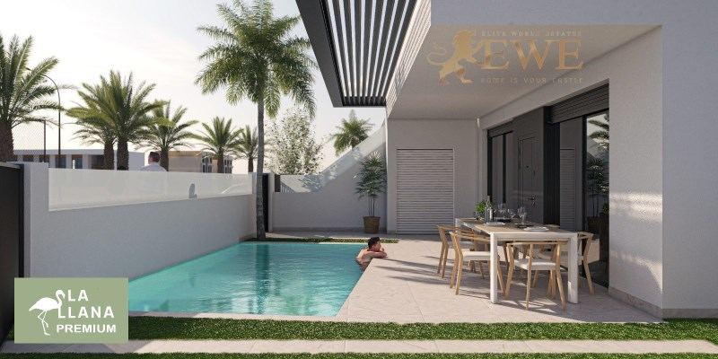
EWE3377San Pedro del Pinatar
New apartment with private pool in San Pedro del Pinatar
€399,000
3 bedrooms · 2 bathrooms · 87.11 m²Ref. EWE3377
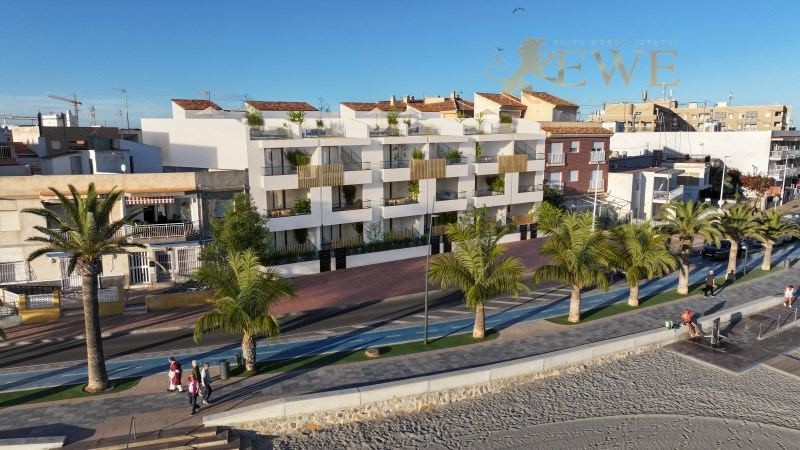
EWE3342San Pedro del Pinatar
Beachfront flat with sea views in Lo Pagan
€425,000
2 bedrooms · 1 bathroom · 78 m²Ref. EWE3342
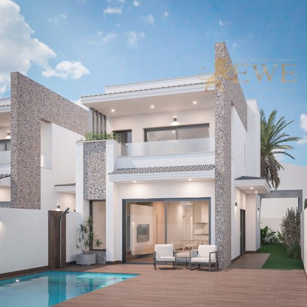
EWE3592San Pedro del Pinatar
Villa with swimming pool in San Pedro del Pinatar
€479,000
3 bedrooms · 3 bathrooms · 112 m²Ref. EWE3592
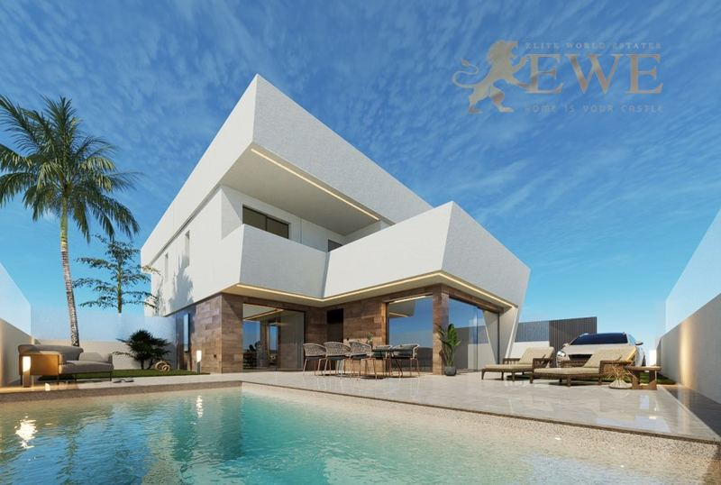
EWE3707San Pedro del Pinatar
Excellent villa with pool 1 km from the beach in San Pedro del Pinatar
€539,950
3 bedrooms · 3 bathroomsRef. EWE3707
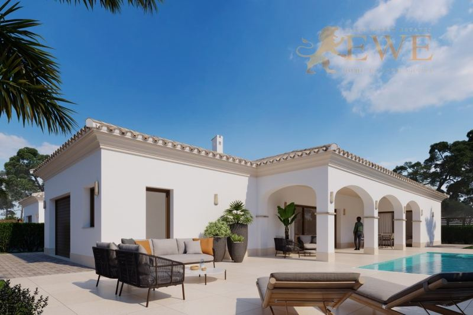
EWE3708San Pedro del Pinatar
Mediterranean villa 400 m from the beach in San Pedro del Pinatar
€809,950
3 bedrooms · 3 bathrooms · 117 m²Ref. EWE3708
The city
Living in San Pedro del Pinatar
San Pedro del Pinatar is a town of about 27,000 people in the north of the Region of Murcia, right on the border with the Costa Blanca. It sits between two seas: the calm, warm Mar Menor lagoon on one side and the open Mediterranean on the other.
Between the town and the sea lies the Salinas y Arenales regional park, with salt pans, dunes, old windmills and flamingos, and long natural beaches on the Mediterranean side. Lo Pagán, the seaside part of the town, is known for its promenade, its marina and the mud baths on the shore of the Mar Menor.
Life is relaxed and prices are lower than on most of the coast. Región de Murcia airport is about 35 minutes away by car, Alicante airport about 50 minutes, and Torrevieja about 20 minutes.
Where to buy
The main areas of San Pedro del Pinatar
Lo Pagán
The seaside part of the town on the Mar Menor, with the promenade, the marina and the mud baths. Apartments close to the water.
Town centre
Shops, markets and services on foot, 1 to 2 km from the beach. New apartments and bungalows for living all year.
Villananitos
A quiet beach area on the Mar Menor, next to Lo Pagán. Apartments and houses near the water.
Outskirts
Newer residential areas a few kilometres from the sea, with villas and terraced houses with a private pool.
Budget
What it costs to buy in San Pedro del Pinatar
On top of the price you pay tax and fees. For a new home at €231,900, for example, that is €23,190 VAT and €3,478 stamp duty, plus notary, land registry and legal fees. Taxes on resale homes are different, so always ask us for the exact figure for the home you like.
| New build | 10% VAT (IVA) + 1.5% stamp duty (AJD) |
|---|---|
| Resale home | 7.75% transfer tax (ITP) |
| Notary, registry, lawyer | about 1.5–2.5% of the price |
| Every year | IBI property tax and community fees, which depend on the home |
Questions
Buying property in San Pedro del Pinatar: questions and answers
How much does an apartment cost in San Pedro del Pinatar?
Our new apartments in San Pedro del Pinatar start at €151,900 today, and most with 1 or 2 bedrooms cost between €150,000 and €330,000. Bungalows cost from about €270,000 and villas with a private pool from about €400,000 to €810,000.
What are the mud baths of Lo Pagán?
On the shore of the Mar Menor in Lo Pagán there are natural mud pools rich in minerals. Many people cover themselves in the mud and then rinse in the lagoon, which is a local tradition in summer.
How far is San Pedro del Pinatar from the airport?
Región de Murcia airport in Corvera is about 35 minutes by car, and Alicante-Elche airport about 50 minutes.
What costs are there on top of the price?
In the Region of Murcia you pay 10% VAT and 1.5% stamp duty on a new build, and 7.75% transfer tax on a resale home. Notary, land registry and legal fees add about 1.5–2.5%.
Can foreigners buy property in San Pedro del Pinatar?
Yes. Anyone can buy property in Spain. You need a Spanish NIE tax number and usually a Spanish bank account, and we help you with both. See our guide to the NIE number.


Looking for a home in San Pedro del Pinatar?
Tell us your budget and what you need. We reply within one working day, in English, German, Spanish or Polish.